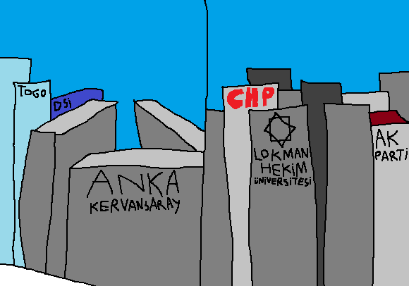

Şehrin enlemesine ana caddesi İnönü Bulvarı'nın devamı olan Dumlupınar Bulvarı, bir sürü rastgele rezidans ve genel merkeze ev sahipliği yapıyor. Hâttâ iktidar partisi ve eski ana muhalefet partisinin genel merkezlerini bile bulunduruyor.